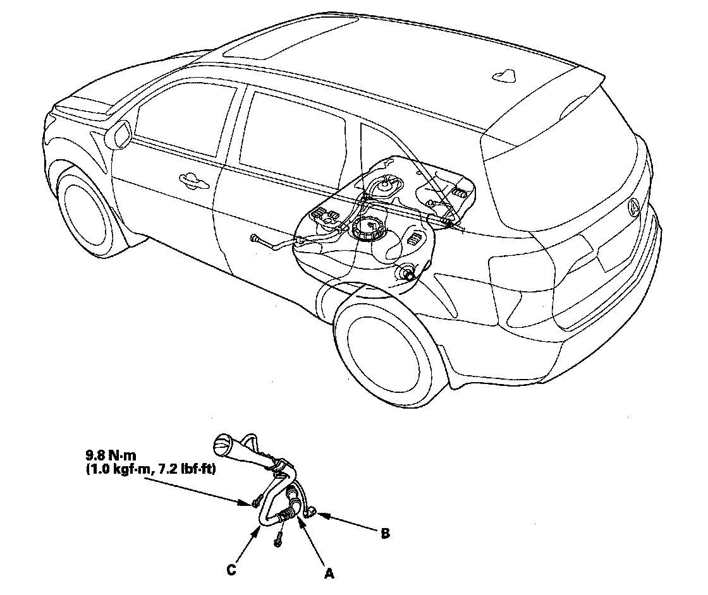

Fuel Filler Hose: Service and Repair
Fuel Fill Pipe Removal/Installation1. Relieve the fuel pressure.
2. Drain the fuel tank.
3. Remove the fuel fill cap.
4. Remove the rear fender cover.

5. Disconnect the fuel fill tube (A) and the quick-connector fittings (B).
6. Remove the fuel fill pipe (C).
7. Install the parts in the reverse order of removal.